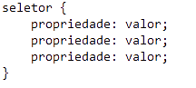

E aí, beleza?
Depois do nosso guia sobre HTML, chegou o momento de falarmos sobre o CSS. Sigla para
Cascading Style Sheets(Estilo de Folhas em Cascata), o CSS é o mecanismo de estilo responsável
pela parte visual dos documentos web, ou seja, é graças a ele que podemos fazer layouts bonitos.
Nesse artigo iremos abordar os seguintes tópicos:
Introdução
Como utilizar
- Inline - Utilizado na própria tag;
- Interno - Você define uma tag <style> dentro do documento HTML;
- Externo - Cria-se um arquivo de extensão .css que será chamado pelo documento HTML.
Elementos
A estrutura básica de um código CSS é definida por:

Principais Propriedades
Fontes
Partindo desse ponto, podemos classificar as fontes mais comuns, a imagem que passam e onde normalmente as encontramos:
| Fonte | Características | Psicologia | Onde é mais usada | Marcas que utilizam |
|---|---|---|---|---|
| Serifada | Pés nas letras(serifas) | Seriedade, tradição, respeito, confiança | Livros, textos longos | Zara, Tiffany & Co, Madero |
| Não-serifada | Linhas retas e simples | Clareza, jovialidade, refinado | Sites, logotipos(principalmente de startups) | LinkedIn, Calvin Klein, YouTube |
| Cursiva | Semelhante à caligrafia, caracóis | Elegância, artístico, liberdade | Cartas, logotipos | Coca-Cola, Instagram, Cadillac |
| Cômicas | Tipos únicos e atraentes | Singularidade, originalidade, divertido, criativo | Logotipos, quadrinhos propaganda | Fanta, Marvel, Rihappy |
Escolhendo as cores
Esse tema é um tanto complexo e demanda um conhecimento profundo a respeito da psicologia por trás das cores e como nosso cérebro as percebem. Embora eu não seja nenhuma expert sobre esse assunto, separei algumas cores e a que normalmente elas são associadas baseada em diversos estudos:
| Cor | Associação |
|---|---|
| Vermelho | Energia, Paixão, Romance, Calor, Romance |
| Branco | Pureza, Inocência, Juventude, clareza |
| Amarelo | Alegria, Felicidade, Positividade, Amigável |
| Laranja | Entusiasmo, Cordialidade, Jovialidade |
Existem também alguns sites bem interessantes que podem te ajudar na escolha das cores como: Coolors, Picular, Color Adobe, ContrastChecker entre outros.
É isso pessoal, por hoje encerramos nossa aulinha de CSS :)
Até a próxima!

Até a próxima!